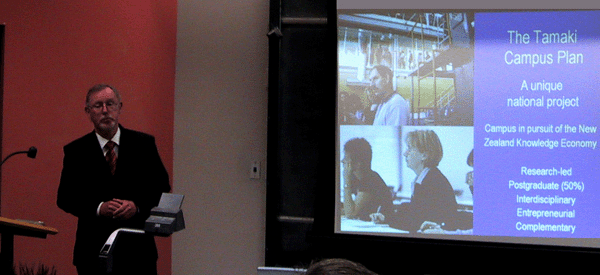

IWCIA - Tenth International Workshop on
Combinatorial Image Analysis
Organized by the University of Auckland -
1 - 3 December 2004, Auckland, New Zealand
Sponsored by IAPR
Welcome to the web page of the 10th International Workshop on
Combinatorial Image Analysis. Prior meetings took place in Paris (France,
1991), Ube (Japan, 1992), Washington DC (USA, 1994), Lyon (France, 1995),
Hiroshima (Japan, 1997), Madras (India, 1999),
Caen (France, 2000), Philadelphia
(USA, 2001), and Palermo
(Italy, 2003).
This 10th edition was held in Auckland
(New Zealand, 01-03 December 2004), at The
University of Auckland.
Besides three invited talks, there were 55 accepted papers at IWCIA 2004 (out
of 88 submissions for this conference).
The IWCIA'04 conference events started with a pre-conference boat trip
to
Waiheke Island on 30 November. The trip included
a bus tour on Waiheke island and a lunch at "Stonyridge" (one of the island's
wineyards).
Conference reception was on 30 November 6pm-8pm at
the
Computer Science building of The University of Auckland (city campus).
The conference took place at CITR
at Tamaki campus.
Conference excursion and dinner was on Thursday afternoon and
evening, with
wine tasting, a visit of the wild west coast at
Muriwai, and
dinner at Markovina vineyard, including a show of the Cook Island Dancers.
Participants may send more of their pictures to the IWCIA'04 organizers to be
included into the slide show below.

The proceedings are volume 3322 within the LNCS series.
The IWCIA steering committee decided about the 11th edition which is planed to be in May 2006 at
Humboldt University, Berlin/Germany, co-chaired by Ralf Reulke (Humboldt), Ulrich Eckhardt (Hamburg University),
and Konrad Polthier (Zuse Institute, Berlin).